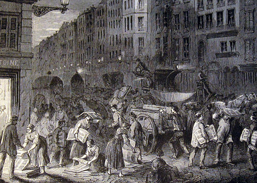

History of newspaper

The modern newspaper is a European invention.[1] The oldest direct handwritten news sheets circulated widely in Venice as early as 1566. These weekly news sheets were full of information on wars and politics in Italy and Europe. The first printed newspapers were published weekly in Germany from 1605. Typically, they were censored by the government, especially in France, and reported mostly foreign news and current prices. After the English government relaxed censorship in 1695, newspapers flourished in London and a few other cities including Boston and Philadelphia. By the 1830s, high-speed presses could print thousands of papers cheaply, allowing low daily costs.